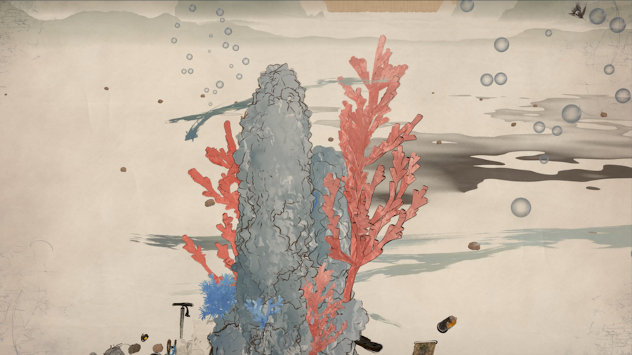

Scomparsa Dell'Infanzia 《童年的消逝》 该作品聚焦儿童在短视频与互联网环境中的认知变化，通过交互视觉与分层信息结构，探讨“童年边界”在现代媒介中的消融过程。 watch project video ↗ Project Notes 项目从“信息过载与教育边界”的社会议题出发，结合图像分镜、统计信息与实时视觉语义，构建一个可被观众主动探索的认知场景。 作品强调儿童与成人信息生态错位的问题，把媒介经验、认知压力和观看行为放在同一个交互场域中进行观察。 Year: 2025 Type: Interactive Project
Energia Del Corallo 该作品融合 3D 建模、材质设计与叙事构图，围绕珊瑚白化和海洋污染问题，用东方墨画视觉语汇构建一个生态警示场景。  Project Notes 通过对珊瑚、鱼群与海底废弃物的象征化建模，作品强调人类活动与海洋系统之间的脆弱关系。 结构上采用多视角展示与分镜式叙事，让观者在审美体验中建立生态反思。 Year: 2025 Type: 3D Project